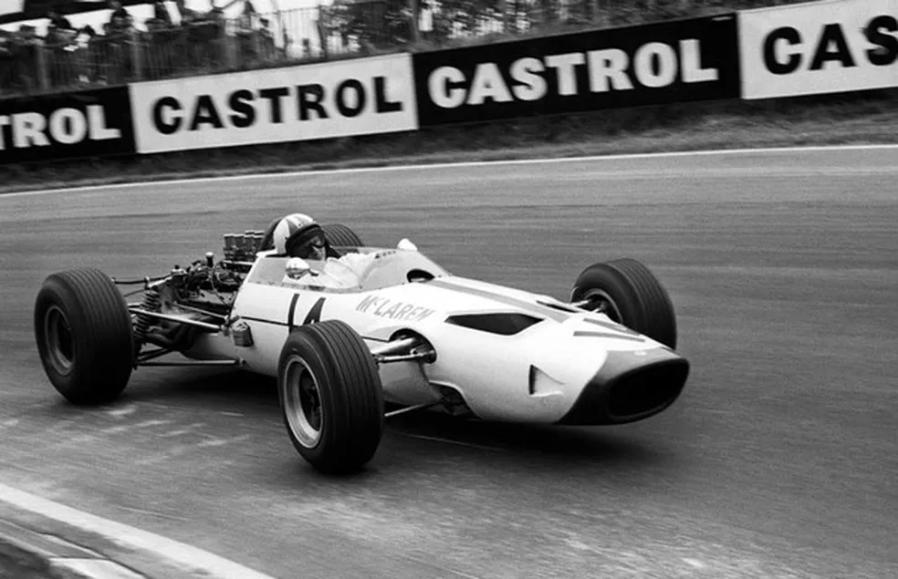

A McLaren foi fundada em 1963 pelo piloto e engenheiro neozelandês Bruce McLaren. Em setembro daquele ano, Bruce, que já havia vencido corridas pela equipe Cooper na Fórmula 1, decidiu criar sua própria equipe de corrida com a visão de construir carros rápidos e inovadores. Assim, surgiu a Bruce McLaren Motor Racing Ltd.
Nos primeiros anos, a equipe focou principalmente em competições de Fórmula 1, Can-Am e Indianapolis 500. Bruce McLaren não apenas dirigia seus próprios carros, mas também estava profundamente envolvido no design e desenvolvimento dos veículos. Em 1966, a McLaren fez sua estreia na Fórmula 1 com o carro M2B.
Um dos primeiros grandes sucessos veio na série Can-Am (Canadian-American Challenge Cup), onde a McLaren dominou a competição entre 1967 e 1971, ganhando cinco campeonatos consecutivos e solidificando sua reputação como uma das equipes mais inovadoras e bem-sucedidas no automobilismo.
A trajetória da McLaren sofreu um golpe em 1970, quando Bruce McLaren morreu tragicamente em um acidente enquanto testava um carro em Goodwood, na Inglaterra. Apesar da perda de seu fundador, a equipe continuou sob a liderança de Teddy Mayer e Tyler Alexander, que mantiveram viva a visão de Bruce e continuaram a competir com sucesso.
Nas décadas seguintes, a McLaren se expandiu e diversificou suas atividades. Na Fórmula 1, a equipe conquistou inúmeros campeonatos de construtores e pilotos, colaborando com pilotos lendários como Emerson Fittipaldi, James Hunt, Niki Lauda, Ayrton Senna e Alain Prost. Além disso, a McLaren entrou no mercado de carros esportivos de alto desempenho, estabelecendo a McLaren Automotive em 1985.
A McLaren é conhecida por suas inovações tecnológicas, incluindo o uso de fibra de carbono na construção de carros de Fórmula 1. Parcerias estratégicas, como a colaboração com Honda e Mercedes-Benz, também contribuíram para o sucesso contínuo da equipe. Hoje, a McLaren continua a ser uma força dominante tanto na Fórmula 1 quanto no mercado de carros esportivos de luxo, mantendo o legado de inovação e excelência iniciado por Bruce McLaren há mais de meio século.